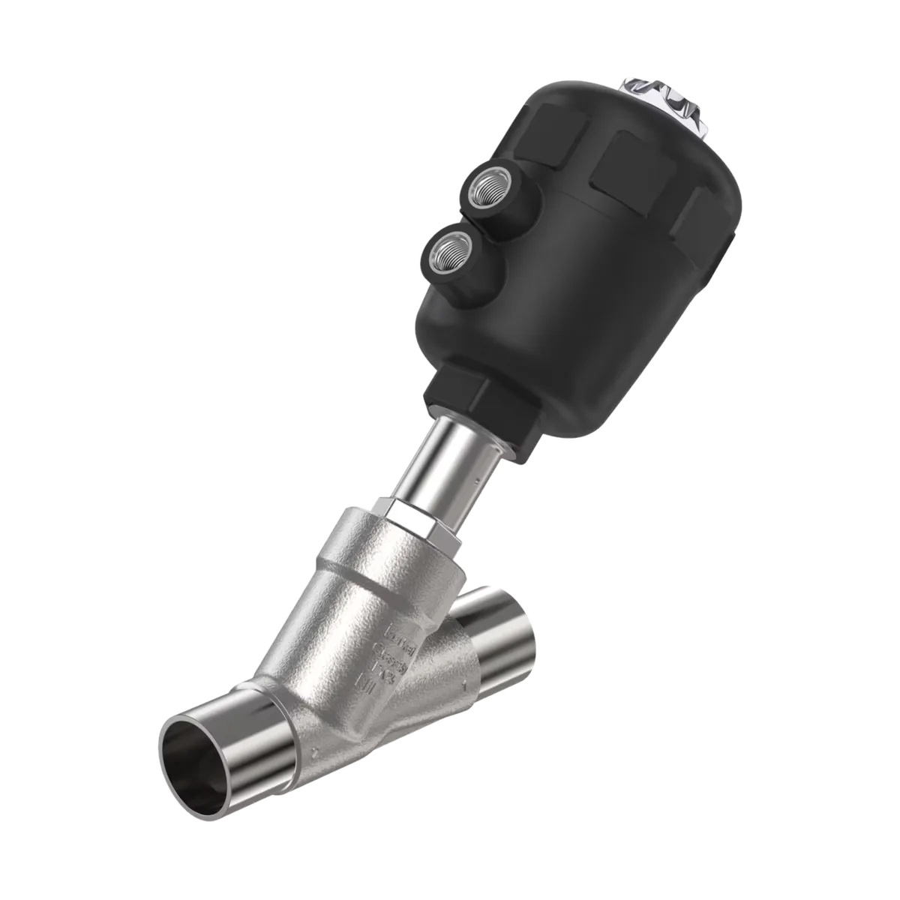

Zawory procesowe
Zawory procesowe grzybkowe on/off Bürkert
Zawory procesowe grzybkowe Bürkert do aplikacji on/off, z napędami pneumatycznymi, elektrycznymi oraz wersjami ręcznymi.

Najważniejsze zastosowania i cechy
Serwokontrol pomaga w doborze produktów Bürkert do konkretnych warunków pracy: medium, ciśnienia, temperatury, zakresu przepływu, przyłącza, materiału wykonania oraz sposobu sterowania.
- Zakres średnic do DN100
- Korpusy: brąz, stal szlachetna 316L i 304
- Przyłącza gwintowane, do wspawania, kołnierzowe i Clamp